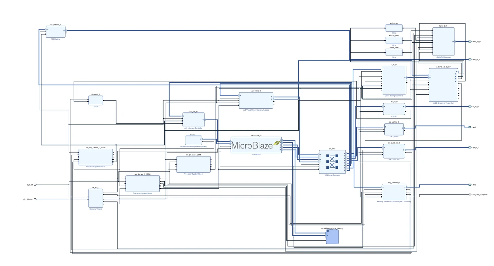
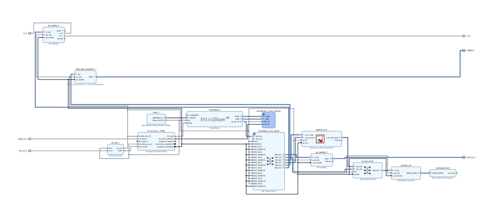
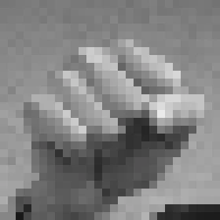
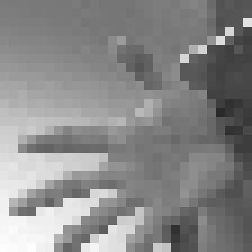
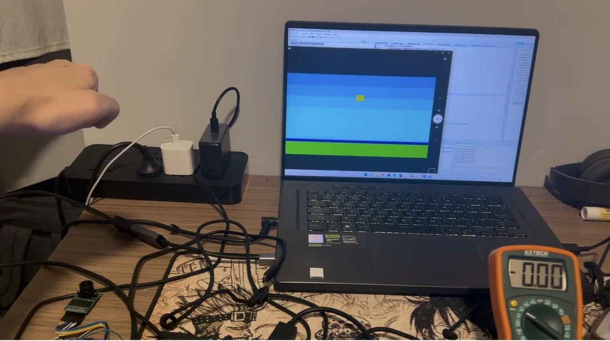
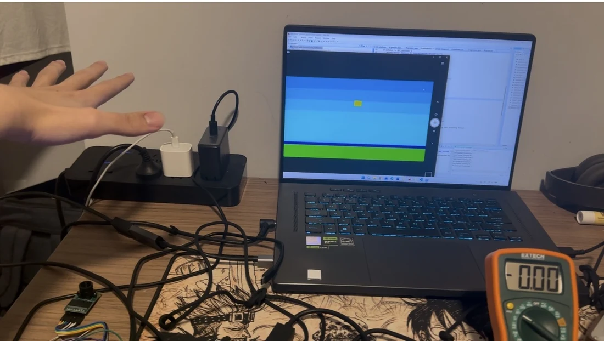

01 / The problem
Make vision interactive on a resource-limited FPGA.
Instead of using a keyboard or a desktop GPU, our team built a gesture-controlled game on two Urbana FPGA boards (XC7S50). The system captures camera images, extracts a small hand region, classifies a fist or an open palm, and updates the bird position on a second display.
The project combines embedded firmware, hardware/software interfaces, image preprocessing and neural-network acceleration. The completed system uses TJpgDec software JPEG decoding on MicroBlaze and hardware CNN inference on the receiver FPGA.
Related individual project: I also developed a separate hardware JPEG decoding prototype. Explore its architecture, DMA integration and pixel-format adaptation ↗.
02 / Final system
Two FPGA boards, one vision pipeline.
Partitioning the design across two FPGAs made room for both the camera/video pipeline and CNN accelerator. A receiver-driven UART handshake transfers the newest 784-byte grayscale tile when the inference side requests another frame.
Reconstructed from the project report’s system-level architecture (Figure 2).
View original sender Vivado block diagram

View original receiver Vivado block diagram

03 / Neural inference
A small CNN in programmable logic.
The project’s receiver uses a compact CNN trained offline on grayscale hand-gesture images and synthesized with Vitis HLS. The input image is transferred as 784 bytes over UART and staged in BRAM for the accelerator. A fixed-point datapath (ap_fixed<16,8>) reduces the cost of convolution and dense-layer computation.


28 × 28 × 124 × 24 × 812 × 12 × 810 × 10 × 165 × 5 × 16400 → 2The HLS-generated IP exposes control and prediction registers to MicroBlaze. The receiver firmware converts the predicted class into bird motion while the hardware Color Mapper generates the display pixels. The 60 Hz display refresh is distinct from the slower inference-update interval.
04 / Measurements & constraints
Where the hardware budget goes.
The final report’s post-implementation statistics explain why the design was split into two boards. The sender uses most of its LUTs for camera support, memory and video infrastructure; the receiver has a higher proportion of DSP and BRAM usage for inference and display logic.
Post-implementation utilization, final report Tables 1 and 3. Each FPGA has 32,600 LUTs, 65,200 registers, 75 BRAM tiles and 120 DSPs.
Latency budget
At 115,200 baud, an 8N1 serial packet takes approximately 784 × 10 / 115,200 ≈ 68 ms. The report gives around 25 ms for CNN inference, producing a reported gesture-update interval of roughly 100 ms. Capture and scheduling can add variability; the report does not establish a comprehensive end-to-end latency distribution.
Timing closure remains a limitation
The sender routed successfully and the report describes working hardware, but its worst negative setup slack was −2.657 ns. Successful operation in the demo is not proof of timing closure across all operating conditions. Improving timing constraints and validating the remaining paths would be useful follow-up work.
05 / On hardware
Gesture response in four frames.
Actual hardware photographs from the team report (Figure 7). A closed fist makes the bird jump; an open palm allows it to fall.





06 / Reflection
What the project taught us.
Optimize the data path, not just the algorithm.
In the software decoder path, the report describes substantial improvement after re-enabling the data cache and using targeted cache flushes for the video DMA.
Interfaces make heterogeneous systems possible.
The request/response UART protocol, AXI register interface, and independent HDMI pipeline demonstrate how a system can integrate components operating at different rates. A polling handshake simplifies coordination, even though transmitting a full packet still consumes time.
Next experiments
Characterize gesture latency across lighting and pose; and close timing on the sender. These would establish a stronger performance and correctness baseline.
07 / Attribution
Credits & technical references
Course project by Tongji Zhang and Chuheng (Arnold) Tao. The report documents assistance from Google Gemini and Anthropic Claude for debugging, code review, and report/diagram preparation. Original hardware photographs and project figures are credited to the team’s final report.
- ECE 385 final project report, Hardware-Accelerated Gesture Controlled Flappy Bird (2026), especially Sections 2, 5–7, and 9.
- ChaN, TJpgDec — Tiny JPEG Decompressor; Bodmer, TJpg_Decoder.
- ArduCAM Mini 2MP Plus documentation.